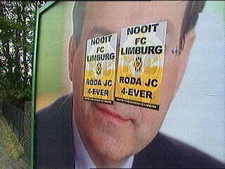
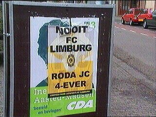

|
NOOIT FC LIMBURG-posters, 29 april 2002 |

De dag na de wedstrijd Roda-RKC zijn er door
geheel Parkstad "Nooit FC Limburg"-posters
geplakt, veelal over verkiezingsbiljetten zoals
hier over Melkert.

CDA verkiezingsdeelneemster Ine Aasted-Madsen
ontdekte de plak-resultaten maar zei in eerste
instantie geen aangifte te doen.
Hier volgt een LD-bericht:
CDA-fractievoorzitter Sjef Jonker uit Landgraaf gaat bij de politie aangifte
doen van vernieling van persoonlijke eigendommen. Jonker vindt de plakactie
op z'n zachtst gezegd 'niet kunnen'. Ook de borden van PvdA, GroenLinks en
de gemeenteborden zien zwart en geel. Ine Aasted-Madsen van Stiphout, nummer
43 op de kandidatenlijst van het CDA voor de Tweede-Kamerverkiezingen, is
eveneens van plan bij de politie aangifte te doen. ,,Dit kost handenvol
geld. De publiciteit rond mijn persoon betaal ik allemaal zelf. Een poster
kost 15 euro per stuk,'' aldus Aasted-Madsen van Stiphout. Een woordvoerster
van Roda JC zegt niet te weten wie de posters heeft opgeplakt. ,,Als we daar
achter komen, gaan we zeker actie ondernemen.'' De illegale plakkers hebben
volgens de Roda-woordvoerster zonder toestemming het embleem van de club
voor hun posters gebruikt.
©KPD